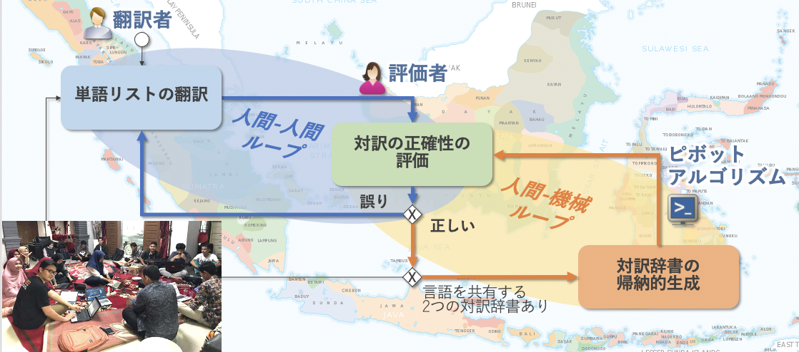
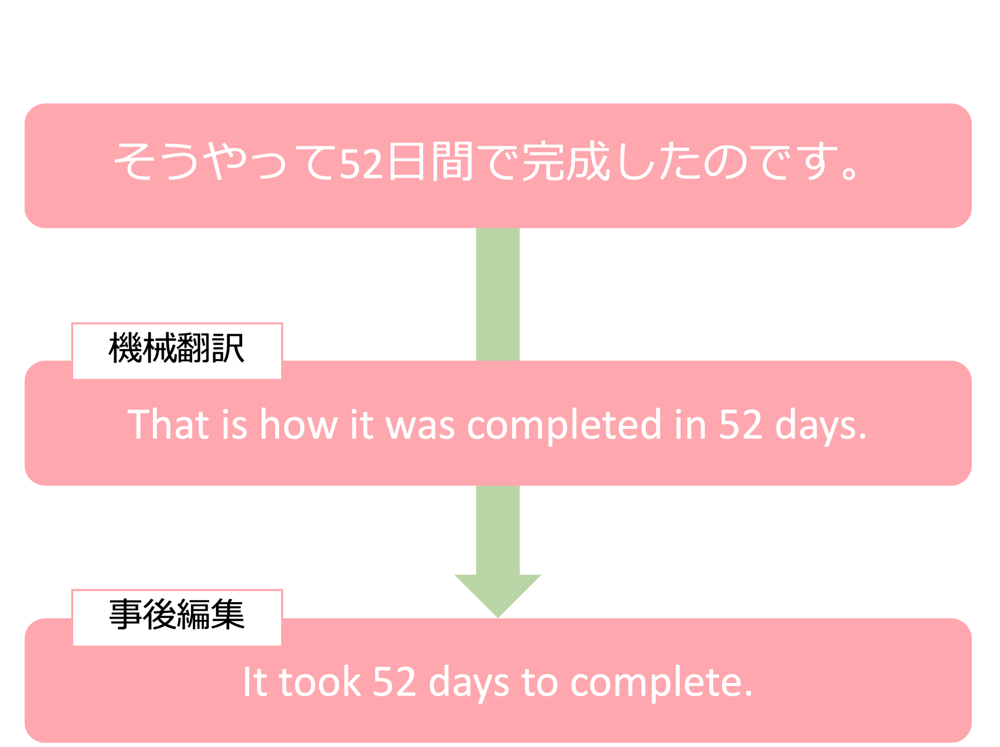
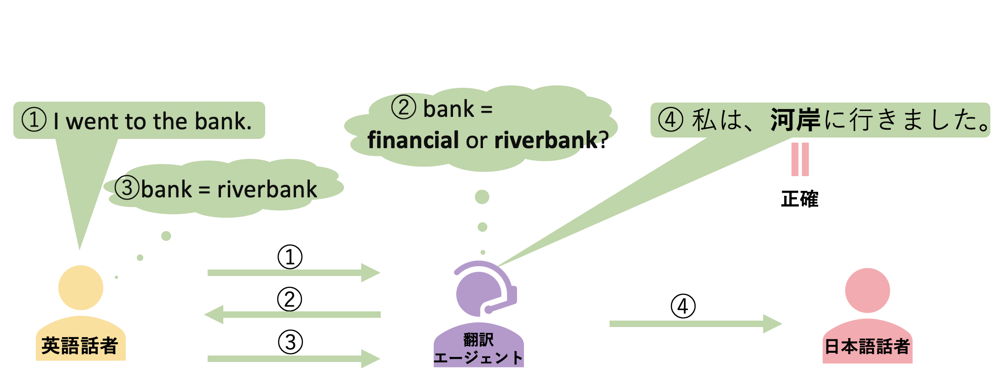

Language Resource
In our lab, we also creating language resources by using and combining cutting-edge technologies. Our projects are listed below.

Pivot-based Bilingual Dictionary Induction for Low Resource Languages
Many Indonesian languages belong to the Austronesian language family, which are very similar languages with the same ancestral language. To create a new bilingual dictionary between these languages (e.g., Malay and Minangkabau), we generated a network of bilingual dictionaries (Malay-Indonesian bilingual dictionary and Minangkabau-Indonesian bilingual dictionary) with a common pivot language (Indonesian) connecting the bilingual pairs in each dictionary and extracts word pairs 'kutukan (Malay) and kiparaik (Minangkabau)' at both ends as bilingual pairs.However, if the words in the pivot language are polysemic (sumpah (Indonesian) has meanings such as oath, promise, and curse) Word pairs with different meanings 'kutukan (Malay) and janji (Minangkabau)' could be extracted. Therefore, we improve accuracy by extracting only word pairs with symmetric topology.
Arbi H. Nasution, Yohei Murakami Toru Ishida. A Generalized Constraint Approach to Bilingual Dictionary Induction for Low-Resource Language Families, ACM Transactions on Asian and Low-Resource Language Information Processing, Vol. 17, No. 2, pp. 9:1-29, 2018.,
Arbi H. Nasution, Yohei Murakami Toru Ishida. Plan Optimization to Bilingual Dictionary Induction for Low-Resource Language Families, ACM Transactions on Asian and Low-Resource Language Information Processing, Vol. 20, No. 2, pp. 29:1-28, 2020.

A Neural Network Approach to Bilingual Dictionary for Low Resource Language Families
Many Indonesian languages belonging to the Austronesian language family are very similar. These very similar languages have words called allonyms, which are derived from words in the same ancestral language. Tautologous words are derived language by language from the same word as the pronunciation of each language develops. Pronunciations of allomorphs may show regular changes between languages (e.g., the 'o' at the end of 'a' word changes to 'a'). The goal is to generate a translation by learning this regular change with a neural network and applying this rule to words in one language. We also aim to contribute to comparative linguistics by generating hypotheses about derivational relations between languages based on the similarity of the acquired rules.
Presentation:Kartika Resiandi, Yohei Murakami, Arbi Haza Nasution. Neural Network-Based Bilingual Lexicon Induction for Indonesian Ethnic Languages, Applied Sciences, vol. 13, no. 15: 8666, 2023.

Decentralized Neural Machine Translation
Building a highly accurate neural machine translation requires a large amount of high-quality bilingual data. However, the construction of such bilingual data incurs significant costs, making it difficult for a single organization to construct such data.In addition, the collection of bilingual data created by different organizations is also hampered by copyright issues, making it difficult to consolidate.Therefore, rather than consolidating the bilingual data in one place for learning, models can be generated by learning the bilingual data under each data owner and then By using federal learning, in which the models are federally linked, we aim to build a decentralized neural machine translation system.
Presentation: 北川勘太朗, 張禹王, 村上陽平. マルチエージェント強化学習を用いたニューラル機械翻訳の連携, 情報処理通信学会総合大会, 2024
Presentation: Kantaro Kitagawa, Yohei Murakami. Federated Neural Machine Translation Using Multi-Agent Reinforcement Learning, in Proc. of The 22nd International Conference on Practical applications of Agents and Multi-Agent Systems (PAAMS 2024), pp. 148-158, 2024.

Neural Machine Translation Bias Analysis
With English having become a lingua franca, it is no longer a single, uniform language. Instead, different varieties of English exist depending on non-native speakers, and society has come to accept this diversity. On the other hand, neural machine translation (NMT) systems are trained on large-scale parallel corpora to learn a single model, and thus generate only one form of English in translation. If the training data is biased toward native English speaker usage, the current diversity of English may be lost, leading to a dominance of native-speaker English. As a result, English expressed from perspectives different from those of non-native speakers may be communicated instead. In this study, we refer to this phenomenon as machine translation bias. As the use of machine translation continues to expand, and machine-generated English spreads throughout society, this trend is expected to accelerate. Therefore, this research aims to investigate whether such a machine translation bias exists by conducting a comparative analysis between English written by non-native speakers and English generated by machine translation. If such a bias is found, we will also examine its specific characteristics.

A Post-Editing Model for Native English Using BART
In recent years, the demand for machine translation has grown rapidly; however, its output is often perceived as unnatural by native English speakers. To address this issue, a technique known as post-editing has attracted attention. Traditionally, post-editing has been performed manually, but this approach poses challenges such as reduced translation speed and increased cost. Therefore, this study aims to automate post-editing by developing a post-editing system using BART.
発表情報: 富田悠斗, 村上陽平. BARTを用いたネイティブ英語への事後編集モデル, 第87回情報処理学会全国大会, 2025.

Prompt Notation for Translation Agents
In sentences that contain polysemous or culturally dependent words, machine translation often fails to correctly interpret the context, leading to mistranslations. For example, the polysemous word “bank” can mean either “financial institution” or “riverbank,” and the appropriate translation depends on the context. To address this issue, translation agents—which interact with users during translation—have gained attention. However, prompts written in natural language tend to retain ambiguity, and as the dialogue continues, large language models (LLMs) may deviate from the original intent. Therefore, to achieve stable long-term control of LLMs, we employ a YAML-based structured prompt that explicitly defines states, events (conditions), and actions (behaviors). As a result, it becomes possible to detect ambiguity over extended interactions and provide accurate translations.
発表情報: 加奥咲江, 村上陽平, Mondheera Pituxcoosuvarn. 翻訳エージェントのためのプロンプト記法, 第87回情報処理学会全国大会, 2025.